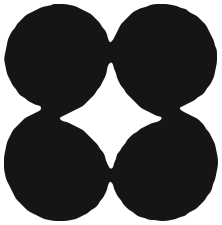

SIGNAL MAP
by Førm Sonics

Routing inspector
NOT CONNECTED
SESSION:
No session loaded
LAST REFRESH:
—
Connect to LUNA
Signal path
Session map
Downstream
Isolate path
Sends
Focus selected
•••
FOLLOW THE SIGNAL
Connect to LUNA to inspect your session.
EXPLORE DEMO
Demo uses labeled synthetic session data.
No channel selected
LEVEL
Unavailable
PEAK
Unavailable
LEGEND:
Main output
Send
PRE / POST
Inspect connections
Read-only inspection. No routing, mute, solo or level changes.
DEMO SCENARIO
Normal route
Muted bus
Missing destination
Unavailable data
Routing cycle
v0.1.7 · LUNA ADD-ON
Connection details
Close